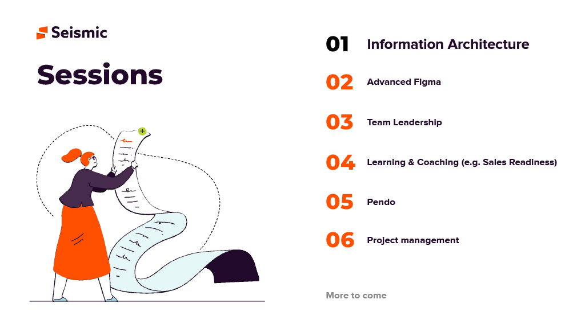
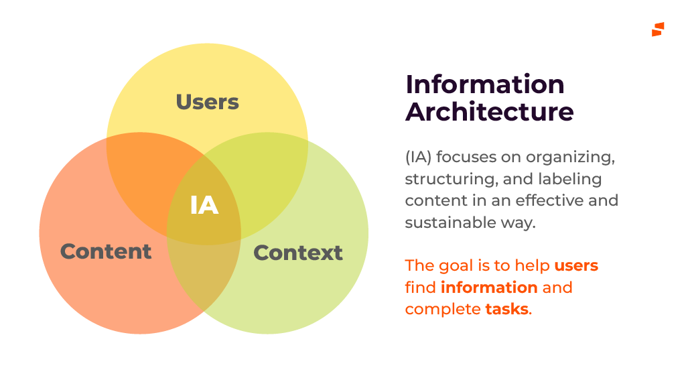
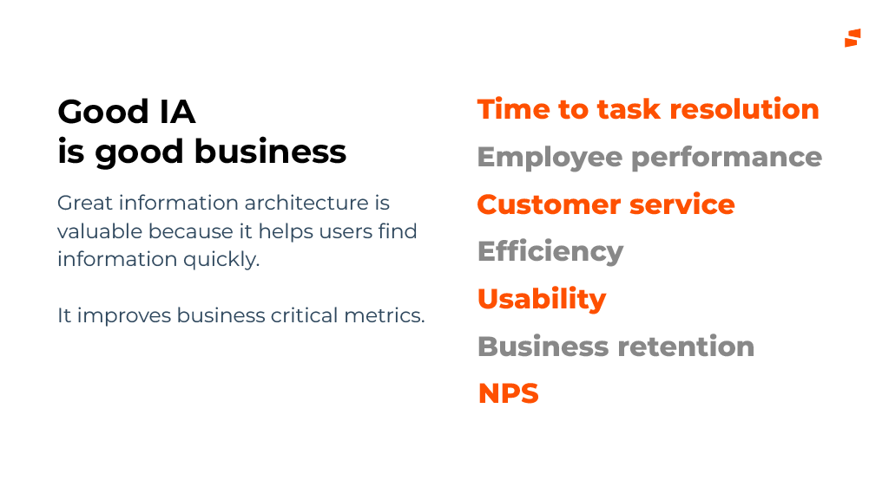
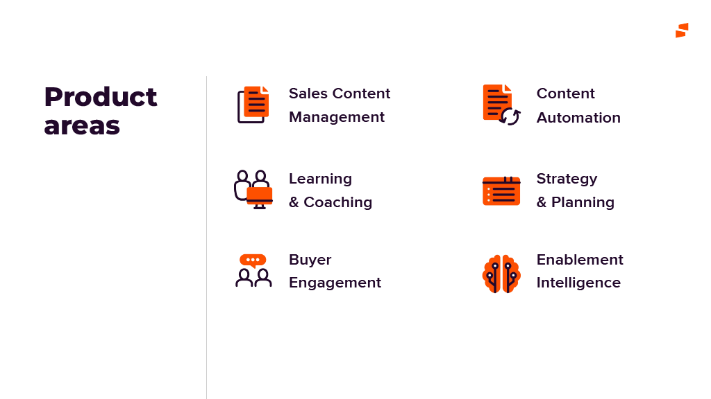
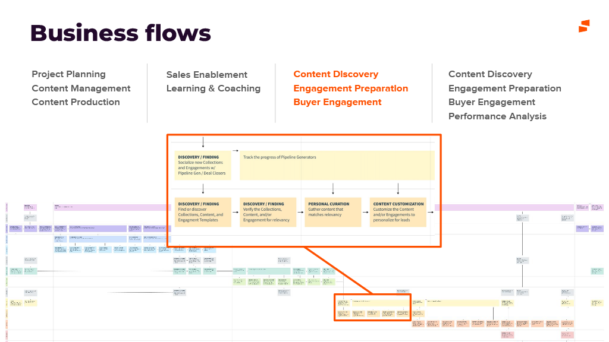
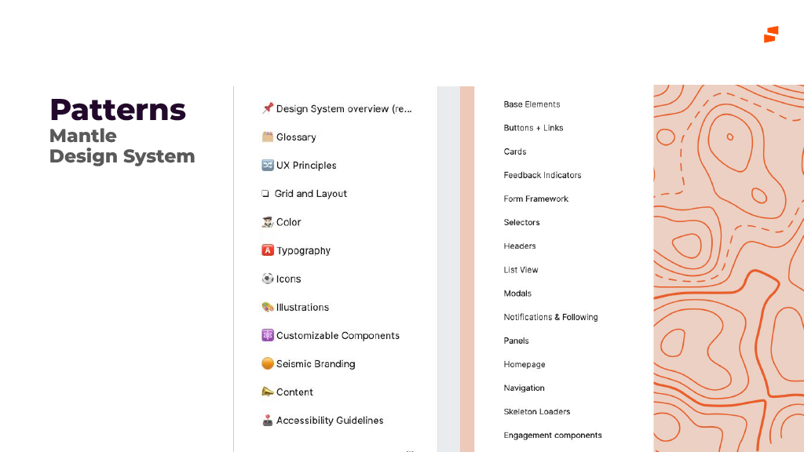
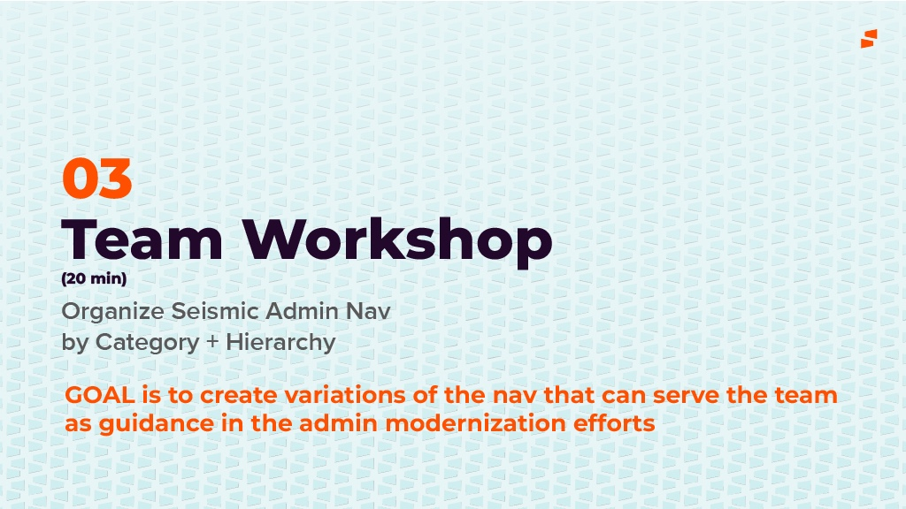
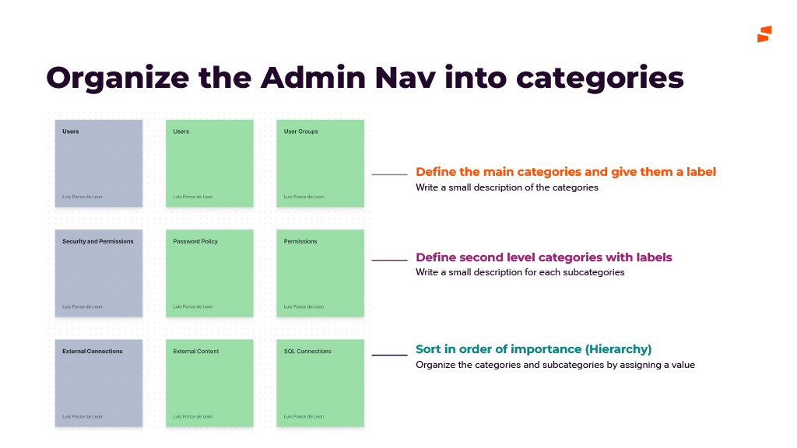

Seismic · 2023
Learning Sessions — Information Architecture
I started a Learning Sessions program to grow the Seismic design team's skills, and led the first session myself, on information architecture. It ended with the team reorganizing the real Seismic Admin navigation, and the variations they produced became guidance for the admin modernization work.
Client
Seismic
Year
2023
Role
Lead Product Designer · program creator & facilitator
Team
Seismic product design team, across all product areas
Product area
Seismic Admin · design team enablement
Focus
IA · Facilitation · Design Leadership

In one line
Seismic's designers were each deep in their own product area, and nobody had time set aside to learn beyond it. I proposed Learning Sessions, a recurring program covering hard, tooling, soft and Seismic product skills, and designed the first session around a real problem: an Admin navigation that had outgrown its structure.
Context and the problem
Seismic is a sales enablement platform with six product areas (content management, content automation, learning and coaching, strategy and planning, buyer engagement, and enablement intelligence) serving eight personas, from marketers and enablers to sellers, admins and the buyers on the other side of the deal.
Designers were organized around those product areas. That made them experts in their own corner and left gaps everywhere else. Few of them could say how a seller's journey crossed from one area into another, and skills beyond the day job, like structuring information, working in advanced Figma or running a team, were learned by chance if at all.
The business had a concrete version of the problem. Seismic Admin had grown one setting at a time as each team added what it needed, and an admin modernization effort was under way. It needed a navigation structure, and the designers who would build it didn't yet share a vocabulary for how to organize one.
While information may be infinite, the ways of structuring it are not. The team needed that idea, and a real problem to practice it on.
The constraints:
- Time came out of delivery. Every hour in a session was an hour away from roadmap work, so each one had to be useful on Monday, not just interesting.
- Mixed experience. The team ranged from designers who had built sitemaps for years to designers who had never been asked to. One session had to work for both.
- A distributed team. Sessions ran remotely, so the workshop had to run on a shared Figma board, not on a wall of sticky notes.
- A live project. The Admin work was in progress. The workshop could inform it, but it couldn't take it over or promise a final answer.
My role and what I owned
I proposed the program and designed and ran the first session.
- I owned the program's goal and topic roadmap, the full content of the IA session, the workshop format and Figma board, facilitation on the day, and the resource list sent out afterwards.
- The design team did the workshop itself: proposing categories, labeling them and ranking them into the nav variations.
- The admin modernization team took those variations forward as input for their own navigation decisions.
The figures are slides from the session deck. I've left out slides that were mostly third-party material, such as photos and screenshots of other products, and removed a link to an internal Figma file.
Goals, and how we'd know
The program goal, as I wrote it on the first slide, was to advance the design team's hard, tooling, soft and Seismic product knowledge skills. For the IA session that became three questions:
- Did it leave a shared vocabulary? Designers should be able to name how a structure is organized (by category, by hierarchy, by time) in critiques and reviews, not just whether it feels right.
- Did it produce something usable? The workshop should end with nav variations the admin team could actually use, not a whiteboard that nobody opens again.
- Did it earn a second session? A program only exists if people come back. Measured by attendance, participation in the workshop, and whether later sessions happened.
What I learned before building the session
Before writing any slides I talked with designers about what they wanted to learn, looked at where critiques kept stalling, and walked through the Admin navigation as it stood. Three things shaped the session.
1. IA was seen as a deliverable, not a way of thinking
To most of the team, information architecture meant a sitemap produced at the start of a project. It rarely came up when deciding what a panel should be called or where a new setting should live. So the session opened by putting IA inside UX, then tying it to memory, attention and decision-making, and to business measures like time to task and retention. That way structure became something you use in every decision, not a document you make once.

2. Designers knew their area, not the map
Designers could explain their own product in detail but struggled to place it next to the others. Generic IA training wouldn't fix that. So I gave the middle of the session to IA at Seismic: our values, personas, product areas, business flows and design system, presented as the material any Seismic structure has to organize.
3. Theory doesn't stick without a real problem
People remembered what they had practiced, not what they had been shown. The Admin navigation was the right problem to practice on: it was real, it was cross-functional, and it was messy enough that there was no single right answer.
Strategy and the decisions that mattered
Decision 1: A program, not a one-off talk
One good talk is easy to forget. I framed Learning Sessions as a program with a published roadmap covering four kinds of skill: hard (IA), tooling (advanced Figma, Pendo), soft (team leadership, project management) and Seismic product knowledge (learning and coaching, taught through our own Sales Readiness product). The roadmap ended with More to come, so people could suggest topics.
Decision 2: Start with IA
Advanced Figma would have been the easy crowd-pleaser. I started with IA because it affects every product area, and because the admin modernization gave us an urgent, real use for it. The first session had to show the program was worth the team's time, and solving a live problem did that better than a tooling tutorial.
Decision 3: Teach all five, practice two
I taught Richard Saul Wurman's LATCH framework (location, alphabet, time, category, hierarchy) with a familiar product for each: transit maps and Yelp for location, a brands A–Z index for alphabet, a feed sorted by Recent for time, Netflix rows for category, and Amazon's menu for hierarchy. Then the workshop narrowed to category and hierarchy only. Admin settings don't have a location, time doesn't affect them, and an A–Z list breaks down at the top level. Leaving out the three methods that didn't fit was a lesson in itself.
Decision 4: Variations, not the answer
It was tempting to promise the admin team a finished navigation. I didn't, for two reasons. Twenty minutes with a mixed group can't produce a reliable final structure, and the admin team owned that decision. So I set the goal as variations of the nav that can serve the team as guidance. Several groups reaching the same categories independently is a stronger signal than one confident answer, and the owning team kept the final call.
The session, in three parts
01 · Foundations
The first part moved from why IA matters to how to do it: IA as part of UX, the cognitive psychology behind it, mental models, the business case, and then LATCH.

02 · IA at Seismic
The second part made the theory local. Each slide covered one layer of what a Seismic structure has to organize.




03 · Team workshop


The session closed with a short reading list: Information Architecture (4th edition), Joel Katz's Designing Information, Christina Wodtke's Blueprints for the Web, Lisa Maria Marquis's Everyday Information Architecture, and the internal Seismic Unified Persona Journey, so the session led somewhere after it ended.
Validation and iteration
We thought a blank board invited ideas. It invited hesitation.
We thought an empty canvas and a list of Admin settings would be the most open way to start. We learned that with only twenty minutes, people spent the first several deciding what a category should look like and how detailed to be, and less time sorting. So we did two things: pre-filled each row with one worked example (Users, Security and Permissions, External Connections) and color-coded category and child cards, so the format was obvious at a glance and the discussion moved straight to where things belong.
Some settings had no clear home, and that was the most useful result
Where groups disagreed on which category a setting belonged to, that setting was usually labeled from the engineering side, or served two personas at once. Those disagreements were more useful to the admin team than the settings everyone agreed on, because they showed exactly where the labels or the model needed work.
Outcome and impact
This was a team program, not a shipped feature, so the evidence is what it left behind.
- Guidance for the admin modernization. The team produced several category-and-hierarchy variations of the Admin nav, which the admin team used as input, including the places where groups disagreed.
- A shared vocabulary. Naming how a structure is organized (by category, by hierarchy, by time) gave critiques a way to talk about structure instead of taste.
- One map of Seismic. Personas, product areas, business flows and Mantle patterns, gathered in one place, gave designers a shared reference outside their own area.
- A program, not a presentation. The roadmap, the format (theory, then local context, then a workshop on a live problem) and the deck gave the next presenters a template to follow.
What I'd do differently
- Measure before and after. I judged the session by how the workshop went. A two-minute tree test on the Admin nav before and after, or a short survey on confidence with IA, would have given me evidence beyond good feedback.
- Give the workshop more time than the slides. The theory needed less time than I gave it and the workshop needed more. Next time I'd flip the ratio and send the LATCH examples out as pre-reading.
- Close the loop in public. The variations went to the admin team, but the designers who made them didn't always see what happened next. A follow-up at the next session showing how their work shaped the nav would have made the case for the program better than anything I could say.
The broader lesson: the best way to teach a design skill is to use it on work the team already cares about. A framework taught in the abstract turns into a slide people forget. The same framework used on the team's own messy navigation turns into a shared habit.